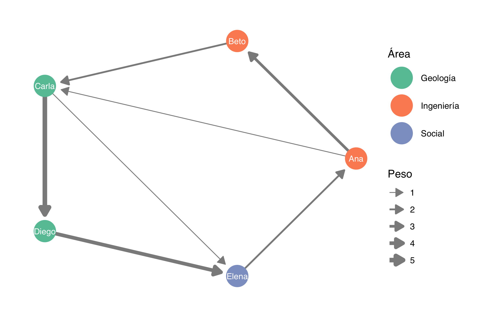
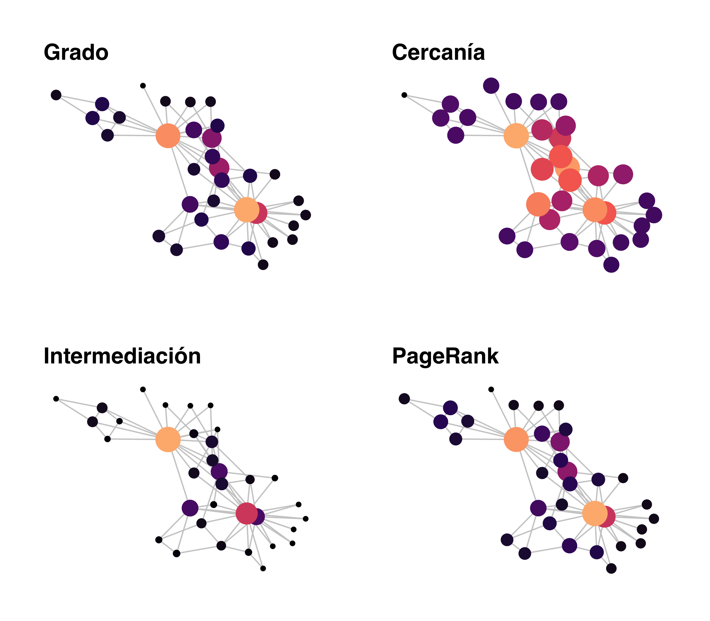
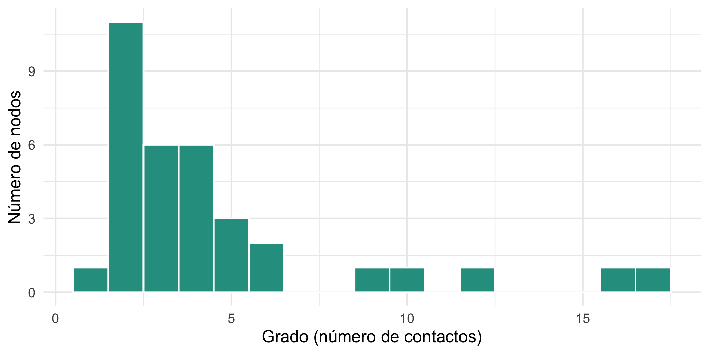
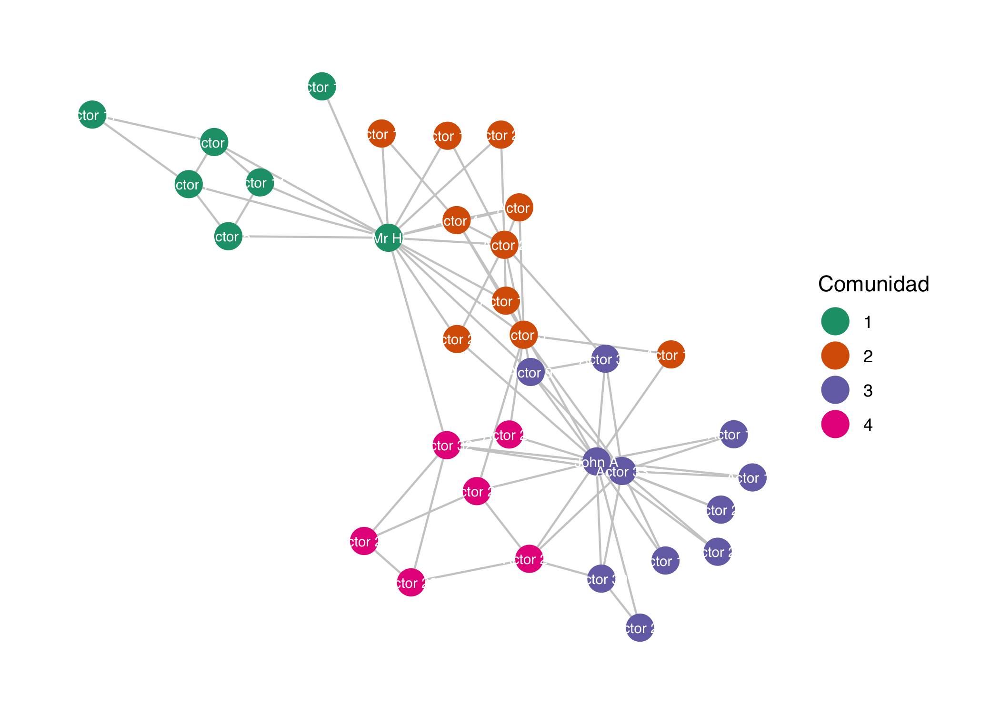
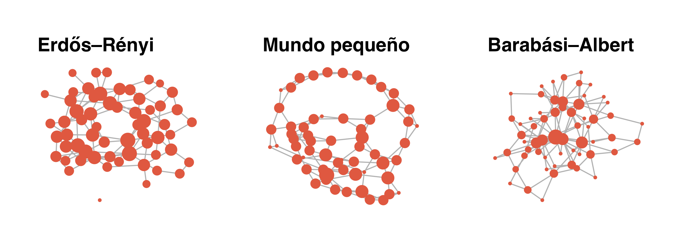
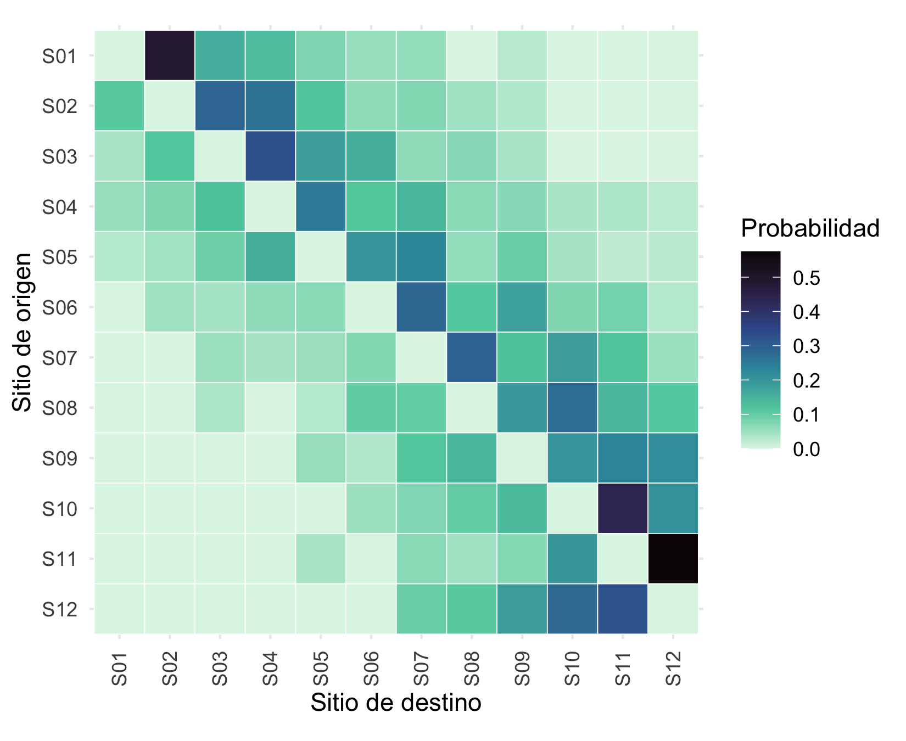
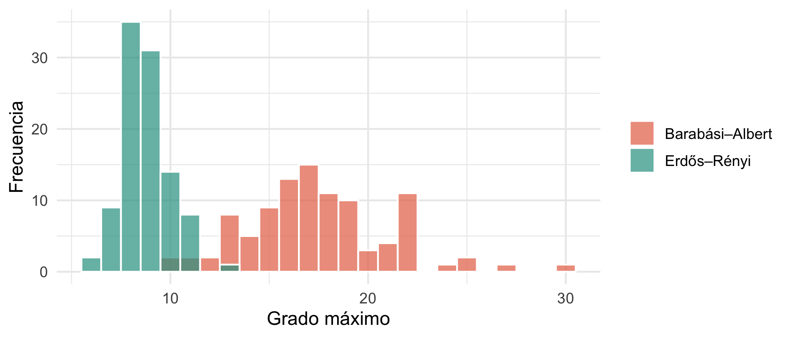

library(igraph) # análisis de redes
library(ggraph) # visualización con la gramática de gráficos
library(tidygraph) # redes "ordenadas" (tidy)
library(ggplot2)
library(dplyr)
library(patchwork) # combinar gráficos
library(igraphdata) # datos de ejemplo
set.seed(2026) # las disposiciones (layouts) usan azarAnálisis de redes con igraph
Minicurso de R · Módulo 8
R
redes
igraph
grafos
De la matriz de adyacencia a las comunidades: teoría, código y ejercicios para analizar redes con igraph y ggraph.
Objetivos de aprendizaje
Al terminar este cuaderno podrás:
- Representar un sistema como una red (nodos y enlaces) y como una matriz de adyacencia.
- Crear, manipular y visualizar redes con
igraphyggraph. - Calcular e interpretar medidas de centralidad (grado, cercanía, intermediación, vector propio y PageRank).
- Describir la estructura global de una red (densidad, diámetro, agrupamiento, componentes).
- Detectar comunidades y comparar una red real con modelos aleatorios.
- Analizar una matriz de conectividad dirigida y ponderada.
1. Teoría: ¿qué es una red?
Una red (o grafo) \(G = (V, E)\) es un conjunto de nodos o vértices \(V\) unidos por enlaces o aristas \(E\). Casi cualquier sistema con elementos que interactúan se puede escribir así:
| Sistema | Nodos | Enlaces |
|---|---|---|
| Red social | Personas | Amistad, colaboración |
| Ecología | Especies | Depredación, polinización |
| Oceanografía | Sitios de un arrecife | Dispersión de larvas |
| Gestión del riesgo | Municipios o instituciones | Ayuda mutua, flujo de información |
| Internet | Páginas | Hipervínculos |
Un mismo sistema puede modelarse con distintos tipos de red:
- No dirigida: el enlace no tiene sentido (a–b es igual que b–a).
- Dirigida: el enlace va de un origen a un destino (a → b).
- Ponderada: cada enlace tiene un peso (intensidad, flujo, probabilidad).
- Bipartita: hay dos tipos de nodos y los enlaces solo conectan tipos distintos (plantas y polinizadores).
La matriz de adyacencia
Toda red con \(n\) nodos se resume en una matriz cuadrada \(A\) de \(n \times n\), donde \(A_{ij} = 1\) si existe un enlace de \(i\) a \(j\) y \(0\) en caso contrario (o el peso del enlace si la red es ponderada). En una red no dirigida \(A\) es simétrica.
Empecemos con una red pequeña de cinco nodos escrita como matriz:
nodos <- letters[1:5]
A <- rbind(c(0, 1, 0, 0, 1),
c(1, 0, 0, 1, 0),
c(0, 0, 0, 0, 1),
c(0, 0, 1, 0, 1),
c(1, 0, 0, 0, 0))
dimnames(A) <- list(nodos, nodos)
A a b c d e
a 0 1 0 0 1
b 1 0 0 1 0
c 0 0 0 0 1
d 0 0 1 0 1
e 1 0 0 0 0g <- graph_from_adjacency_matrix(A, mode = "directed")
gIGRAPH 50e68ed DN-- 5 8 --
+ attr: name (v/c)
+ edges from 50e68ed (vertex names):
[1] a->b a->e b->a b->d c->e d->c d->e e->aLa primera línea del resultado se lee así: DN-- 5 8 significa que la red es Dirigida, con nodos con Nombre, de 5 nodos y 8 enlaces. Si además fuera ponderada aparecería una W y si fuera bipartita una B.
2. Crear y describir redes con igraph
Hay tres formas habituales de crear una red: desde una matriz (arriba), desde una lista de enlaces o con una descripción textual.
enlaces <- data.frame(
origen = c("Ana", "Ana", "Beto", "Carla", "Carla", "Diego", "Elena"),
destino = c("Beto", "Carla", "Carla", "Diego", "Elena", "Elena", "Ana"),
peso = c(3, 1, 2, 5, 1, 4, 2)
)
personas <- data.frame(
nombre = c("Ana", "Beto", "Carla", "Diego", "Elena"),
area = c("Ingeniería", "Ingeniería", "Geología", "Geología", "Social")
)
g2 <- graph_from_data_frame(enlaces, directed = TRUE, vertices = personas)
g2IGRAPH 815efe7 DN-- 5 7 --
+ attr: name (v/c), area (v/c), peso (e/n)
+ edges from 815efe7 (vertex names):
[1] Ana ->Beto Ana ->Carla Beto ->Carla Carla->Diego Carla->Elena
[6] Diego->Elena Elena->Ana Los atributos se consultan y modifican con V() (nodos) y E() (enlaces):
V(g2)$name[1] "Ana" "Beto" "Carla" "Diego" "Elena"V(g2)$area[1] "Ingeniería" "Ingeniería" "Geología" "Geología" "Social" E(g2)$peso[1] 3 1 2 5 1 4 2Visualización con ggraph
ggraph usa la misma gramática que ggplot2: capas de enlaces (geom_edge_*) y de nodos (geom_node_*).
ggraph(g2, layout = "circle") +
geom_edge_link(aes(width = peso),
arrow = arrow(length = unit(3, "mm"), type = "closed"),
end_cap = circle(6, "mm"), colour = "grey55") +
geom_node_point(aes(colour = area), size = 10) +
geom_node_text(aes(label = name), colour = "white", size = 3) +
scale_edge_width(range = c(0.4, 2.2), name = "Peso") +
scale_colour_brewer(palette = "Set2", name = "Área") +
theme_graph(base_family = "sans")
TipConsejo
La disposición (layout) no cambia la red, solo su dibujo. Prueba "fr" (fuerzas), "kk", "stress", "circle" o "grid". Como varias usan azar, fija set.seed() para obtener siempre el mismo dibujo.
3. Centralidad: ¿quién es importante?
La centralidad cuantifica la importancia de un nodo según su posición en la red. No existe una única definición: cada medida responde a una pregunta distinta.
| Medida | Pregunta que responde | Idea |
|---|---|---|
| Grado | ¿Quién tiene más contactos? | Número de enlaces del nodo |
| Cercanía (closeness) | ¿Quién llega más rápido a todos? | Inverso de la distancia media a los demás |
| Intermediación (betweenness) | ¿Quién controla el flujo? | Fracción de caminos más cortos que pasan por el nodo |
| Vector propio | ¿Quién está conectado a nodos importantes? | Puntaje proporcional a la suma de los puntajes de los vecinos |
| PageRank | ¿Quién recibe más atención en una red dirigida? | Vector propio con “teletransporte” |
Formalmente, la intermediación del nodo \(v\) es
\[ C_B(v) = \sum_{s \neq v \neq t} \frac{\sigma_{st}(v)}{\sigma_{st}} \]
donde \(\sigma_{st}\) es el número de caminos más cortos entre \(s\) y \(t\), y \(\sigma_{st}(v)\) cuántos de ellos pasan por \(v\).
Usaremos la red clásica del club de karate de Zachary (34 personas, 1970s), que se dividió en dos grupos tras un conflicto.
data(karate, package = "igraphdata")
karate <- upgrade_graph(karate)
karate <- delete_edge_attr(karate, "weight") # usamos la versión sin pesos
karateIGRAPH 4b458a1 UN-- 34 78 -- Zachary's karate club network
+ attr: name (g/c), Citation (g/c), Author (g/c), Faction (v/n), name
| (v/c), label (v/c), color (v/n)
+ edges from 4b458a1 (vertex names):
[1] Mr Hi --Actor 2 Mr Hi --Actor 3 Mr Hi --Actor 4 Mr Hi --Actor 5
[5] Mr Hi --Actor 6 Mr Hi --Actor 7 Mr Hi --Actor 8 Mr Hi --Actor 9
[9] Mr Hi --Actor 11 Mr Hi --Actor 12 Mr Hi --Actor 13 Mr Hi --Actor 14
[13] Mr Hi --Actor 18 Mr Hi --Actor 20 Mr Hi --Actor 22 Mr Hi --Actor 32
[17] Actor 2--Actor 3 Actor 2--Actor 4 Actor 2--Actor 8 Actor 2--Actor 14
[21] Actor 2--Actor 18 Actor 2--Actor 20 Actor 2--Actor 22 Actor 2--Actor 31
[25] Actor 3--Actor 4 Actor 3--Actor 8 Actor 3--Actor 9 Actor 3--Actor 10
+ ... omitted several edges
Note
Los datos originales traen un peso en cada enlace (cuántos contextos comparten dos personas). Lo eliminamos para tratar la red como no ponderada; si se dejara, closeness() y betweenness() usarían el peso como distancia y los resultados serían engañosos.
centralidad <- tibble(
nodo = V(karate)$name,
grado = degree(karate),
cercania = closeness(karate),
intermediacion = betweenness(karate),
vector_propio = eigen_centrality(karate)$vector,
pagerank = page_rank(karate)$vector
)
centralidad |>
arrange(desc(intermediacion)) |>
head(6) |>
knitr::kable(digits = 3, caption = "Los seis nodos con mayor intermediación.")| nodo | grado | cercania | intermediacion | vector_propio | pagerank |
|---|---|---|---|---|---|
| Mr Hi | 16 | 0.017 | 231.071 | 0.952 | 0.097 |
| John A | 17 | 0.017 | 160.552 | 1.000 | 0.101 |
| Actor 33 | 12 | 0.016 | 76.690 | 0.827 | 0.072 |
| Actor 3 | 10 | 0.017 | 75.851 | 0.850 | 0.057 |
| Actor 32 | 6 | 0.016 | 73.010 | 0.512 | 0.037 |
| Actor 9 | 5 | 0.016 | 29.529 | 0.609 | 0.030 |
Las medidas suelen coincidir en los nodos más importantes, pero no en el orden. Se ve mejor dibujando la red cuatro veces, con el tamaño del nodo proporcional a cada medida:
grafo_c <- as_tbl_graph(karate) |>
mutate(grado = centrality_degree(),
cercania = centrality_closeness(),
intermediacion = centrality_betweenness(),
pagerank = centrality_pagerank())
xy <- create_layout(grafo_c, layout = "fr")
dibujar <- function(var, titulo) {
ggraph(xy) +
geom_edge_link(colour = "grey80") +
geom_node_point(aes(size = .data[[var]], colour = .data[[var]])) +
scale_colour_viridis_c(option = "magma", end = 0.85, guide = "none") +
scale_size(range = c(1.5, 9), guide = "none") +
labs(title = titulo) +
theme_graph(base_family = "sans")
}
(dibujar("grado", "Grado") | dibujar("cercania", "Cercanía")) /
(dibujar("intermediacion", "Intermediación") | dibujar("pagerank", "PageRank"))
WarningError frecuente
closeness() solo está bien definida en redes conexas. Si la red tiene varios componentes, calcúlala por componente o usa la versión armónica. Interpreta siempre la centralidad según el fenómeno: en una red de contagio, la intermediación importa más que el grado.
4. Estructura global de la red
Además de los nodos, interesa describir la red completa:
- Densidad: fracción de enlaces posibles que existen, \(d = \dfrac{2m}{n(n-1)}\) para redes no dirigidas con \(m\) enlaces.
- Longitud media de camino: distancia promedio entre pares de nodos.
- Diámetro: la mayor distancia entre dos nodos.
- Coeficiente de agrupamiento (clustering): probabilidad de que dos vecinos de un nodo también sean vecinos entre sí (“los amigos de mis amigos son mis amigos”).
- Componentes: subredes conexas separadas.
tibble(
nodos = vcount(karate),
enlaces = ecount(karate),
densidad = edge_density(karate),
longitud_media = mean_distance(karate),
diametro = diameter(karate),
agrupamiento = transitivity(karate, type = "global"),
componentes = components(karate)$no
) |>
tidyr::pivot_longer(everything(), names_to = "medida", values_to = "valor") |>
knitr::kable(digits = 3)| medida | valor |
|---|---|
| nodos | 34.000 |
| enlaces | 78.000 |
| densidad | 0.139 |
| longitud_media | 2.408 |
| diametro | 5.000 |
| agrupamiento | 0.256 |
| componentes | 1.000 |
Distribución del grado
En muchas redes reales unos pocos nodos concentran muchos enlaces (hubs) y la mayoría tiene pocos. Es la distribución del grado:
ggplot(centralidad, aes(grado)) +
geom_histogram(binwidth = 1, fill = "#2a9d8f", colour = "white") +
labs(x = "Grado (número de contactos)", y = "Número de nodos") +
theme_minimal(base_size = 12)
5. Comunidades
Una comunidad es un grupo de nodos más conectados entre sí que con el resto. El método de Louvain las encuentra maximizando la modularidad
\[ Q = \frac{1}{2m}\sum_{ij}\left(A_{ij} - \frac{k_i k_j}{2m}\right)\delta(c_i, c_j), \]
que compara los enlaces observados dentro de cada grupo con los esperados al azar (\(k_i\) es el grado del nodo \(i\) y \(\delta\) vale 1 si \(i\) y \(j\) están en la misma comunidad).
com <- cluster_louvain(karate)
comIGRAPH clustering multi level, groups: 4, mod: 0.4
+ groups:
$`1`
[1] "Mr Hi" "Actor 5" "Actor 6" "Actor 7" "Actor 11" "Actor 12"
[7] "Actor 17"
$`2`
[1] "Actor 2" "Actor 3" "Actor 4" "Actor 8" "Actor 10" "Actor 13"
[7] "Actor 14" "Actor 18" "Actor 20" "Actor 22"
$`3`
[1] "Actor 9" "Actor 15" "Actor 16" "Actor 19" "Actor 21" "Actor 23"
+ ... omitted several groups/verticesmodularity(com)[1] 0.395217Podemos comparar las comunidades detectadas con la división real del club (atributo Faction):
table(comunidad = membership(com), faccion = V(karate)$Faction) faccion
comunidad 1 2
1 7 0
2 9 1
3 0 11
4 0 6compare(com, V(karate)$Faction, method = "nmi")[1] 0.5818579ggraph(xy) +
geom_edge_link(colour = "grey80") +
geom_node_point(aes(colour = factor(membership(com))), size = 6) +
geom_node_text(aes(label = name), size = 2.5, colour = "white") +
scale_colour_brewer(palette = "Dark2", name = "Comunidad") +
theme_graph(base_family = "sans")
6. Modelos de redes aleatorias
Para saber si una propiedad de la red observada es “especial”, se compara con modelos generadores:
- Erdős–Rényi
sample_gnp(): cada par de nodos se conecta con probabilidad \(p\). Sin estructura. - Mundo pequeño (Watts–Strogatz)
sample_smallworld(): mucho agrupamiento y caminos cortos. - Enlace preferencial (Barabási–Albert)
sample_pa(): los nodos nuevos prefieren conectarse a los que ya tienen muchos enlaces, lo que produce hubs.
n <- 60
redes <- list(
"Erdős–Rényi" = sample_gnp(n, p = 0.06),
"Mundo pequeño" = sample_smallworld(1, n, nei = 2, p = 0.08),
"Barabási–Albert" = sample_pa(n, m = 2, directed = FALSE)
)
paneles <- Map(function(g, nombre) {
ggraph(g, layout = "fr") +
geom_edge_link(colour = "grey75") +
geom_node_point(aes(size = degree(g)), colour = "#e76f51") +
scale_size(range = c(1, 6), guide = "none") +
labs(title = nombre) +
theme_graph(base_family = "sans")
}, redes, names(redes))
wrap_plots(paneles, nrow = 1)
resumen <- function(g) c(
densidad = edge_density(g),
longitud_media = mean_distance(g),
agrupamiento = transitivity(g),
grado_maximo = max(degree(g))
)
sapply(c(list("Karate (real)" = karate), redes), resumen) |>
t() |>
knitr::kable(digits = 3)| densidad | longitud_media | agrupamiento | grado_maximo | |
|---|---|---|---|---|
| Karate (real) | 0.139 | 2.408 | 0.256 | 17 |
| Erdős–Rényi | 0.056 | 3.446 | 0.079 | 7 |
| Mundo pequeño | 0.068 | 4.105 | 0.349 | 6 |
| Barabási–Albert | 0.066 | 2.857 | 0.102 | 19 |
Observa tres cosas: el modelo de mundo pequeño alcanza el mayor agrupamiento (0,35), pero a costa de caminos más largos que los de los otros modelos; en Barabási–Albert el grado máximo (19) triplica el del modelo aleatorio (7); y la red real del club combina ambas características, con hubs (grado máximo 17) y un agrupamiento (0,26) muy superior al de una red aleatoria (0,08).
7. Aplicación: conectividad entre sitios
Un caso frecuente en ecología marina es una matriz de conectividad: la fila \(i\) indica la probabilidad de que una larva que sale del sitio \(i\) llegue a cada sitio \(j\). Es una red dirigida y ponderada, y en ella la fuerza de un nodo (suma de pesos) reemplaza al grado.
Simulamos una matriz de conectividad de 12 sitios en una costa (la cercanía favorece el intercambio):
n_sitios <- 12
sitios <- paste0("S", sprintf("%02d", 1:n_sitios))
# La probabilidad decae con la distancia y hay una corriente dominante
distancia <- abs(outer(1:n_sitios, 1:n_sitios, "-"))
sesgo <- outer(1:n_sitios, 1:n_sitios, function(i, j) ifelse(j > i, 1, 0.4))
C <- exp(-distancia / 2.5) * sesgo * matrix(runif(n_sitios^2, 0.5, 1.5), n_sitios)
diag(C) <- 0
C[C < 0.05] <- 0 # umbral: se ignoran conexiones muy débiles
C <- C / rowSums(C) # cada fila suma 1
dimnames(C) <- list(origen = sitios, destino = sitios)
round(C[1:5, 1:5], 2) destino
origen S01 S02 S03 S04 S05
S01 0.00 0.49 0.16 0.13 0.08
S02 0.11 0.00 0.29 0.26 0.12
S03 0.04 0.12 0.00 0.33 0.19
S04 0.06 0.08 0.12 0.00 0.25
S05 0.03 0.05 0.09 0.15 0.00gc <- graph_from_adjacency_matrix(C, mode = "directed", weighted = TRUE)
tibble(
sitio = sitios,
fuerza_entrada = strength(gc, mode = "in"),
pagerank = page_rank(gc)$vector
) |>
arrange(desc(pagerank)) |>
head(5) |>
knitr::kable(digits = 3, caption = "Los cinco sitios con mayor PageRank (mejores destinos). La fuerza de salida vale 1 en todos porque cada fila de la matriz suma 1.")| sitio | fuerza_entrada | pagerank |
|---|---|---|
| S11 | 1.397 | 0.154 |
| S12 | 1.245 | 0.149 |
| S10 | 1.305 | 0.138 |
| S09 | 1.160 | 0.107 |
| S07 | 1.304 | 0.097 |
Una matriz de adyacencia también se puede leer como un mapa de calor, que muestra de un vistazo el patrón de conexiones:
as.data.frame(as.table(C)) |>
ggplot(aes(destino, origen, fill = Freq)) +
geom_tile(colour = "white") +
scale_fill_viridis_c(option = "mako", direction = -1, name = "Probabilidad") +
scale_y_discrete(limits = rev) +
coord_equal() +
labs(x = "Sitio de destino", y = "Sitio de origen") +
theme_minimal(base_size = 11) +
theme(axis.text.x = element_text(angle = 90, vjust = 0.5))
8. PageRank paso a paso
PageRank es la base del buscador original de Google. Imagina una persona que navega al azar: con probabilidad \(\beta\) (típicamente 0,85) sigue un enlace de la página en la que está y con probabilidad \(1-\beta\) salta a una página cualquiera. El PageRank es la fracción de tiempo que pasa en cada página a largo plazo, es decir, el vector propio principal de la matriz
\[ M = \beta\, P + \frac{1-\beta}{n}\, \mathbf{1}\mathbf{1}^\top, \]
donde \(P\) es la matriz de transición (cada fila de \(A\) dividida por la suma de esa fila). Lo calculamos a mano y lo comparamos con igraph:
g_web <- make_graph(c(1,2, 1,3, 1,4, 2,3, 2,6, 3,1, 3,5, 4,2, 4,1,
4,5, 5,2, 5,6, 6,3, 6,4), directed = TRUE)
A_web <- as_adjacency_matrix(g_web, sparse = FALSE)
P <- A_web / rowSums(A_web) # matriz de transición por filas
n <- nrow(P)
beta <- 0.85
M <- beta * P + (1 - beta) / n # se suma (1-β)/n a todas las celdas
# Vector propio izquierdo dominante (por eso se traspone M)
v <- Re(eigen(t(M))$vectors[, 1])
pr_manual <- v / sum(v)
# Método de la potencia: iterar r <- rM hasta converger
r <- rep(1 / n, n)
for (i in 1:100) r <- as.numeric(r %*% M)
tibble(
pagina = 1:n,
vector_propio = pr_manual,
potencia = r,
igraph = page_rank(g_web, damping = beta)$vector
) |>
knitr::kable(digits = 4)| pagina | vector_propio | potencia | igraph |
|---|---|---|---|
| 1 | 0.1548 | 0.1548 | 0.1548 |
| 2 | 0.1740 | 0.1740 | 0.1740 |
| 3 | 0.2128 | 0.2128 | 0.2128 |
| 4 | 0.1389 | 0.1389 | 0.1389 |
| 5 | 0.1548 | 0.1548 | 0.1548 |
| 6 | 0.1647 | 0.1647 | 0.1647 |
Los tres métodos coinciden. El método de la potencia (multiplicar repetidamente por \(M\)) es el que se usa en la práctica porque escala a redes con millones de nodos.
Ejercicios
- Matriz a red. Crea la matriz de adyacencia de una red no dirigida de cuatro nodos en forma de cuadrado (a–b–c–d–a), conviértela en objeto
igraphy calcula su diámetro y su densidad. - Centralidades. En la red del club de karate, ¿qué nodos están en el top 3 del grado pero no en el top 3 de la intermediación? Explica por qué puede ocurrir.
- Comparación de comunidades. Aplica
cluster_edge_betweenness()ycluster_fast_greedy()akaratey compara su modularidad con la de Louvain. - Hubs. Genera 100 redes Erdős–Rényi y 100 Barabási–Albert de 60 nodos. Compara la distribución del grado máximo. ¿Qué observas?
- Conectividad. En la matriz
Cde la sección 7, los mejores destinos son los de mayor PageRank. Para hallar las mejores fuentes, calcula el PageRank de la red con los enlaces invertidos (graph_from_adjacency_matrix(t(C), weighted = TRUE)). ¿Coinciden ambos rankings? ¿Por qué no?
NoteSolución sugerida del ejercicio 1
A4 <- matrix(0, 4, 4, dimnames = list(letters[1:4], letters[1:4]))
A4["a","b"] <- A4["b","c"] <- A4["c","d"] <- A4["d","a"] <- 1
A4 <- A4 + t(A4) # hacerla simétrica (no dirigida)
g4 <- graph_from_adjacency_matrix(A4, mode = "undirected")
diameter(g4) # 2: de a a c hay que pasar por b o d[1] 2edge_density(g4) # 4 enlaces de 6 posibles = 0.667[1] 0.6666667
NoteSolución sugerida del ejercicio 4
sim <- bind_rows(
tibble(modelo = "Erdős–Rényi",
gmax = replicate(100, max(degree(sample_gnp(60, p = 0.065))))),
tibble(modelo = "Barabási–Albert",
gmax = replicate(100, max(degree(sample_pa(60, m = 2, directed = FALSE)))))
)
ggplot(sim, aes(gmax, fill = modelo)) +
geom_histogram(binwidth = 1, position = "identity", alpha = 0.7, colour = "white") +
scale_fill_manual(values = c("#e76f51", "#2a9d8f"), name = NULL) +
labs(x = "Grado máximo", y = "Frecuencia") +
theme_minimal(base_size = 12)
Para profundizar
- Newman, M. E. J. (2018). Networks (2.ª ed.). Oxford University Press.
- Barabási, A.-L. (2016). Network Science. Cambridge University Press. Disponible gratis en networksciencebook.com.
- Csárdi, G., Nepusz, T. y Horvát, S. Documentación de igraph para R.
- Pedersen, T. L. Documentación de ggraph.
- Ognyanova, K. (2016). Network Analysis and Visualization with R and igraph (taller NetSciX), fuente de inspiración de la sección 2 de este cuaderno.